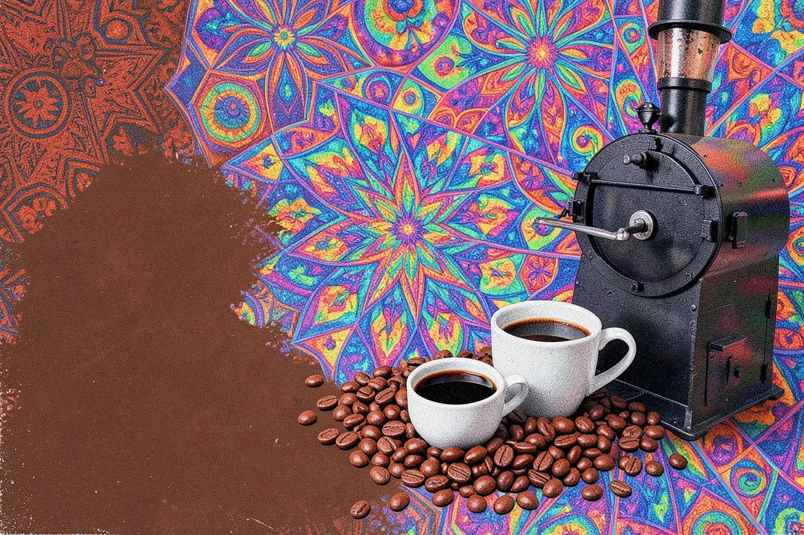

Den psykedeliske siden av den tidlige cyberkulturen. Den slår sammen cyberpunk med syrefarge: fraktaler, kaleidoskoper, posteriserte Photoshop-kollasjer, tidlig 3D-skrift og rave-flygeblader. Navnet kommer fra klubben i filmen Hackers (1995).

Kjerneidé
Datamaskinen er en bevissthetsmaskin: bruk syrefarge, fraktal gjentakelse og rå tidlige programvareeffekter for å vise et sinn som har gått inn i nettverket.
Designprinsipper
Fyll bunnen med en fraktal- eller kaleidoskopflis som gjentas 6 eller 8 ganger rundt et sentrum, ved 40 % til 60 % dekning.
Sett en palett av 4 syrefarger (#FF2BD6, #19F0FF, #B6FF1A, #FF8A00) på en dyp fiolett bunn (#12002B).
Bruk gradienter med harde bånd: posteriser til 5 til 7 trinn, og blend aldri mykt.
Sett displayskrift i utvidede, konturerte eller 3D-ekstruderte bokstaver på 72px eller større, med en kopi forskjøvet 4px i en annen farge.
Kollasjér utklippsfotografier med en hvit omriss-strek på 2px og en posterisert fargevask ved 60 % dekning.
Roter aksentelementer med 3° til 12° og la lagene overlappe med 16px til 48px.
Hold brødteksten på en solid mørk blokk ved 90 % dekning på 16px med kontrast på 7:1 eller mer.